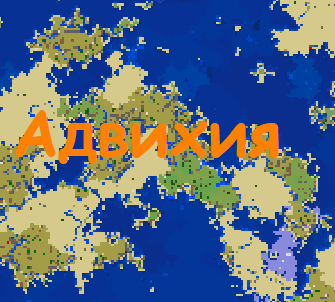

Адвихия

О стране:
Уровень технологий: средний
Уровень магии: низкий
Типы магии: манускрипт, зачатки магии других государств
Правитель/орган власти: Император
Гос религия: Регасан
Распределение религий: 78,5% - Регасан, Паверизм – 18,5%, другое – 3%
Перонажи: Джирджаг, Гасанбег XIII
Столица: Дезертхард
Описание
Адвихия — это империя, которая является самым большим осколком Орбии.
Орбия являлась самой огромной империей времен до портального шторма. Она может встретить вас изобилием торговли, жарким, но дружелюбным климат, а также золотистым песком, который славится своей красотой по всему миру.
Сейчас Адвихия восстанавливается после кризиса, вызванного распадом Орбии. Правящая династия является потомками Гасанбека I который потерялся в море и с тех пор оно называлось морем потерь.
В один момент Орбия разрослась до таких масштабов что обнаружила ледник. Орбия захотела получить земли ледника. Их вмешательство пробудило ледник, и он захотел полакомиться человечинкой. Орбия неготовая к войне с нежитью начала проигрывать. И в последствии королевской семье пришлось уехать в самую южную провинцию Адвихию. На последнем издыхании она смогла остановить ледник и прогнать ледник в долгую спячку. Остатки Орбии разбрелись и стали независимыми. Но ни одна из этих стран не смогла достичь мощи Орбии и сильно уступали Адвихии во всем.
В последствии Льюльяльяко в серии завоевательных походов присоединил большинство осколков Орбии включая один из самых больших Ши'задоу. Ши'задоу граничил с ледником и поэтому его главной задачей было присматривать за ним. Но даже в наше время Льюльяльяко считается одним из лучших полководцев и императоров.
Вскоре после портального шторма умер царь Адвихии Морум I и перед своей смертью он завещал свой престол среднему сыну Мораксу. Старшему сыну Джирджагу не понравился выбор отца, и он обьявил себя новым императором т.к. его поддерживало большая часть населения кроме военных он легко взошел на престол. Моракс собрав большую часть армии решил захватить трон. Но у него не получилось заполучить трон т. к. Младший принц заранее узнал о восстании и предупредил брата. Джирджаг вспомнил о древней реликвии его рода найденой под столицией адвихии эндер портал. С помощью эндер портала Император смог победить Моракса уничтожив его армию гигантским выбросом энергии безны. После этого он отправил среднего брата в ссылку в Ши'задоу что бы тот следил за ледником и не претендовал на трон.
>hr>Во время совместной экспедиции стран в эндер мир яйцо дракона было украдено самим Мораксом. Впоследствии Ши’задоу просит у МОРа поддержки после вступает в него и отсоединяется от Адвихии. После этих событий Джирджаг был разъярён этой новостью потому что предполагалось что яйцо обладает большой силой и оно пренадлежит Мораксу но еще с большой поддержкой. Из-за случившейся ситуации имератор вступает в ГОК. Что бы заручится поддержкой и восстановить силы. Так же выделяются территория под базу ГОК на территории Адвихии. По тайным сведеньям этой базой является бункер, который запитан энергией портала. В это же время по слухам император создаёт армию нового поколения и торгует с другими участниками коалиции.